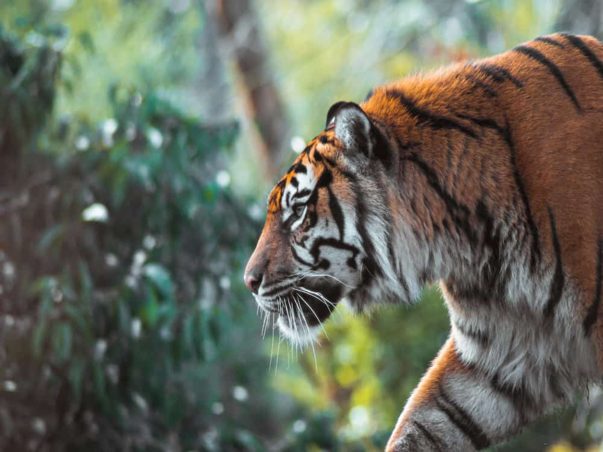
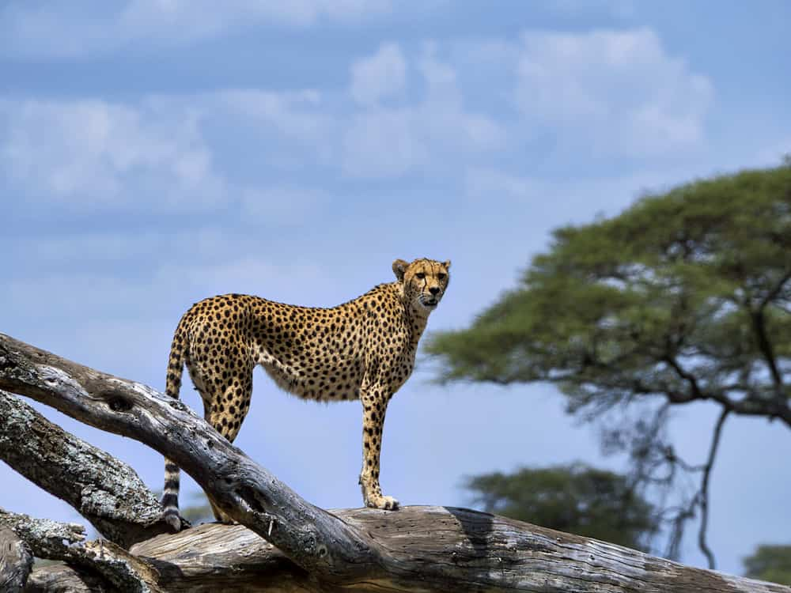
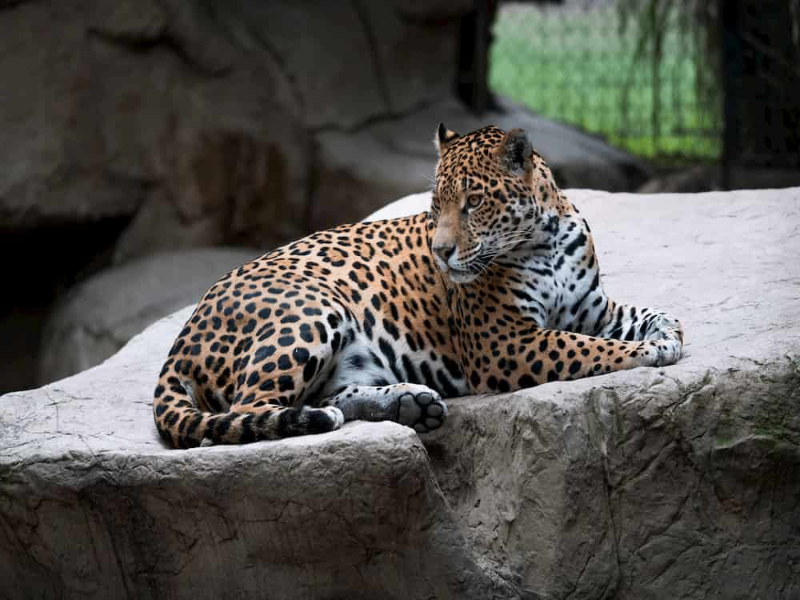
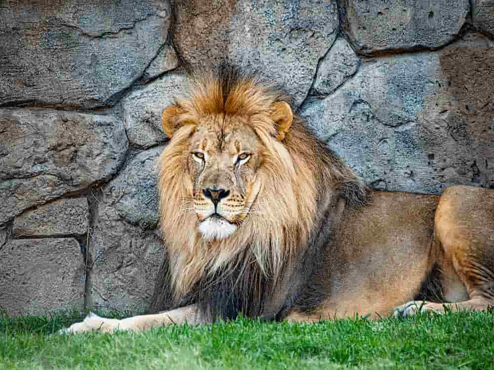

Tigers
From Wikipedia, the free encyclopedia

8/10/2020
The tiger (Panthera tigris) is the largest extant cat species and a member of the genus Panthera.
It is most recognisable for its dark vertical stripes on orange-brown fur with a lighter underside.
It is an apex predator, primarily preying on ungulates such as deer and wild boar.
It is territorial and generally a solitary but social predator, requiring large contiguous areas of habitat, which support its requirements for prey and rearing of its offspring.
Tiger cubs stay with their mother for about two years, before they become independent and leave their mother's home range to establish their own.
Read More...
Cheetahs
From Wikipedia, the free encyclopedia

9/21/2020
The cheetah (Acinonyx jubatus) is a large cat native to Africa and central Iran.
It is the fastest land animal, capable of running at 80 to 128 km/h (50 to 80 mph), and as such has several adaptations for speed, including a light build, long thin legs and a long tail.
Cheetahs typically reach 67–94 cm (26–37 in) at the shoulder, and the head-and-body length is between 1.1 and 1.5 m (3.6 and 4.9 ft).
Adults typically weigh between 20 and 65 kg (44 and 143 lb). Its head is small, rounded, and has a short snout and black tear-like facial streaks.
The coat is typically tawny to creamy white or pale buff and is mostly covered with evenly spaced, solid black spots. Four subspecies are recognised.
Read More...
Leopards
From Wikipedia, the free encyclopedia

9/15/2020
The leopard (Panthera pardus) is one of the five extant species in the genus Panthera, a member of the Felidae.
It occurs in a wide range in sub-Saharan Africa, in small parts of Western and Central Asia, on the Indian subcontinent to Southeast and East Asia.
It is listed as Vulnerable on the IUCN Red List because leopard populations are threatened by habitat loss and fragmentation, and are declining in large parts of the global range.
In Hong Kong, Singapore, Kuwait, Syria, Libya, Tunisia and most likely in Morocco, leopard populations have already been extirpated.
Read More...
Jaguars
From Wikipedia, the free encyclopedia

10/10/2020
The jaguar (Panthera onca) is a large felid species and the only extant member of the genus Panthera native to the Americas.
The jaguar's present range extends from the southwestern United States and Mexico in North America, across much of Central America, and south to Paraguay and northern Argentina in South America.
Though there are single cats now living within Arizona, the species has largely been extirpated from the United States since the early 20th century.
It is listed as Near Threatened on the IUCN Red List; and its numbers are declining. Threats include loss and fragmentation of habitat.
Read More...
Lions
From Wikipedia, the free encyclopedia

10/1/2020
The lion (Panthera leo) is a species in the family Felidae and a member of the genus Panthera.
It has a muscular, deep-chested body, short, rounded head, round ears, and a hairy tuft at the end of its tail.
It is sexually dimorphic; adult male lions have a prominent mane. With a typical head-to-body length of 184–208 cm (72–82 in) they are larger than females at 160–184 cm (63–72 in).
It is a social species, forming groups called prides. A lion pride consists of a few adult males, related females and cubs.
Groups of female lions usually hunt together, preying mostly on large ungulates.
The lion is an apex and keystone predator; although some lions scavenge when opportunities occur and have been known to hunt humans, the species typically does not.
Read More...